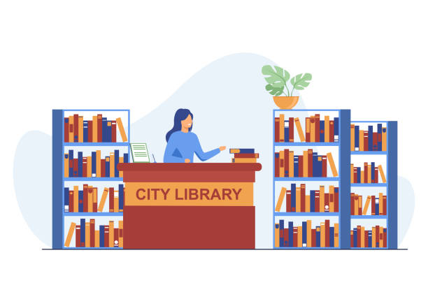
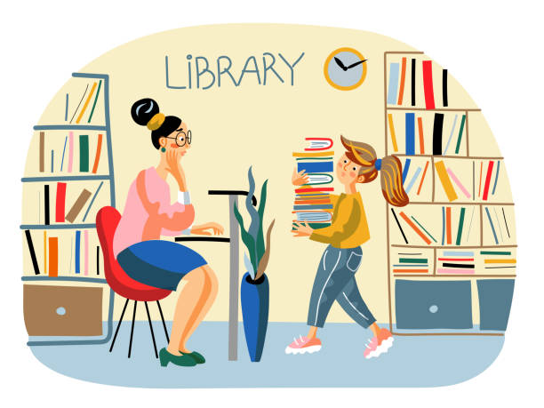
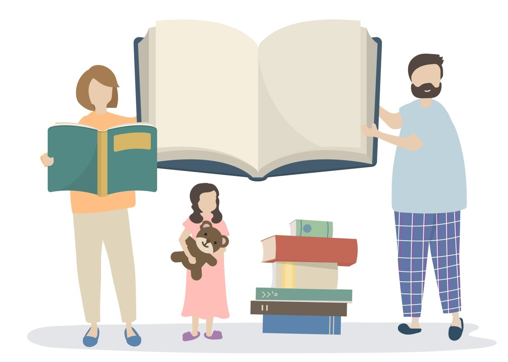

Виртуальная школьная библиотека — это современный ресурс, созданный для поддержки учебного процесса и развития читательской культуры среди учащихся. Она предоставляет доступ к обширному фонду электронных книг, учебных пособий, научных статей и художественной литературы. Библиотека предлагает удобный интерфейс, который позволяет легко находить нужные материалы, а также различные инструменты для работы с текстами и заметками.


Одной из главных задач виртуальной школьной библиотеки является создание комфортной и доступной среды для обучения. Здесь ученики могут не только читать книги, но и участвовать в онлайн-мероприятиях, таких как литературные конкурсы, обсуждения и мастер-классы с писателями и педагогами. Эта платформа способствует развитию критического мышления и аналитических навыков, а также помогает формировать любовь к чтению и самосовершенствованию.
Кроме того, виртуальная библиотека активно сотрудничает с учителями и администрацией школы, чтобы обеспечить актуальность и разнообразие предлагаемых материалов. Регулярные обновления фонда, а также рекомендации по новинкам и популярным книгам делают ресурс незаменимым помощником как для учащихся, так и для педагогов. Мы приглашаем всех заинтересованных присоединиться к нашему сообществу и открыть для себя мир знаний и творчества!
